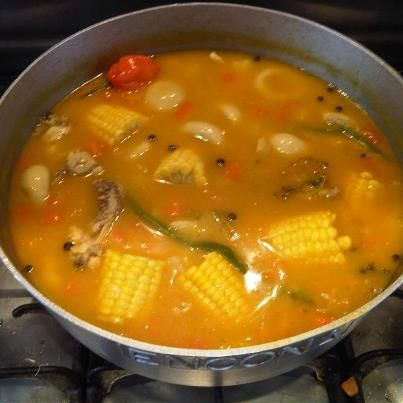

Home
Jamaican Pumpkin Soup

How to Cook Pumpkin Soup The Jamaican Way
Jamaican Pumpkin Soup is a must have on Saturdays when growing up in Jamaica. This is an easy recipe that can bring back all the joys of pumpkin soup the way mama used to make.
Ingredients
- 5 cup(s) water
- 2 1/2 pound(s) pumpkin, large diced
- 4 cup(s) chicken stock
- 1 packet(s) cock soup
- 3 clove(s) garlic, chopped
- 1 stalk(s) escallion, chopped
- 1 large onion, chopped
- 1 sprig(s) thyme
- 1 whole scotch bonnet pepper
- 1 tablespoon(s) margarine
- 1 1/4 teaspoon(s) salt
Steps
-
In a saucepan bring to a boil 5 cups of water.
-
Peel and dice pumpkin, add to boiling water and cook until tender. Drain and set aside to cool.
-
Blend pumpkin using 4 cups of chicken stock, and a packet of cock soup mix. Pour blended mixture into saucepan and bring to a boil.
-
Add chopped garlic, escallion, onion, thyme, scotch bonnet pepper, margarine and salt.
- Allow to cook for 10 minutes or until soup thickens.